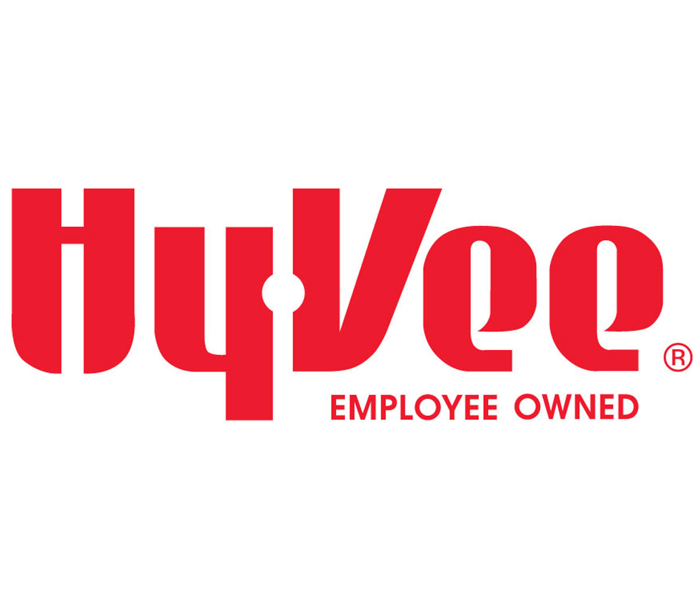

Boy Scouts of America
I actually worked for the Boy Scouts of America 4 different times. The first 3 times were the summers after my sophomore, junior and senior years in high school. During those times I worked as a summer camp counselor teaching Arts & Crafts merit badge at H. Roe Bartle Scout Reservation in Osceola, MO. I was a part of the Camp Sawmill staff. The 4th time I worked for the Boy Scouts was during my freshman year in college. I worked for the Konza District in Junction City, KS which is part of the Coronado Area Council. During this time, I ran after school programs for elementary aged kids.
Stanley Steemer
I worked for Stanley Steemer the summer after my freshman year in college. I worked in the Kansas City area trying to make some money to help me during the next school year. I started as an assistant, which meant I rode with a Salesman/Cleaner and help set up and then take equipment down when done. After about a month of doing that, I was promoted to a Salesman with my own van. As a Salesman, you are the ones actually responsible for cleaning the carpets. Not only that, but you are also responsible for upselling to customers. Your pay is completely based on how much you can add on to customer's orders.

Border Books and Music
This is by far my favorite job I have had. I worked for Borders Books and Music during my sophomore year in college. My official title was Book Seller. The job consisted of the normal stocking new books, music, and movies when they came in. But it also included talking to every customer about books, music, and movies. I was free to recommend titles to customers based on their interests. I was also able to find many books based on customer recommendations! And the absolute best part of this job was that employees were allowed to check books out similar to a library! The only rule was that they had to be returned in sellable condition. It is unforutnate that Borders went out of business because I could see myself still working there today if not.

Walmart
This is probably the least favorite job I have had. I worked for Walmart during my junior year in college. I started working the night shift as stocker so that I was able to still go to class during the day. This lead to many days of 4 or less hours of sleep so that I could work and still have time to go to class and do homework. After about a year of working nights, I was able to adjust my school schedule to allow me to work during the day. I was then promoted to Electronics Department Manager. This part of the job was much better than the first because I was able to spent most of my time offering recommendations to customers about various electronics, video games, music, and movies. When I moved back to the Kansas City Area, I briefly worked at a Walmart in the area but soon left for other oppotunities.

AMC Theaters
I only worked for AMC Theaters for about 2 months. I did everything. I did concessions and went home smelling like popcorn many nights. I was an usher and cleaned theaters between shows. I was a porter, AMC's term for the guy that cleans the bathrooms. I worked in the box office selling tickets. There are 2 things that made this job worth it. First, you were able to see as many movies as you wanted for free as long as it was not sold out. I watched a differnet movie every day and sometimes I watched movies multiple times! The second is this is where I met my wife. We worked together for a short time and then after I left didn't speak to each other for over a year. Now we are happily married and have AMC to thank for bringing us together! Fun Fact: My wife's initials are now AMC!

Hy-Vee
And this brings us to my current job, Assistant Director at Hy-Vee. I have had many positions at Hy-Vee over the years but have been Assistant Director for the last 3. My goal is eventually to be a Store Director and have my own store but I still have a lot to learn before I get there. Currently, my job is to assist the Store Director in the day to day operations of the store. I specialize in Non-Foods departments including General Merchandise, Health and Beauty, Health Market, Pharmacy, and the Fuel Station. I am Food Safety certified and a UST A/B Operator. The best part of Hy-Vee is that every store has the power of autonomy. We have a template for how the store should be run but have the freedom to make adjustments and carry different items to best service our customers because every store is in a different location and has different customers.
